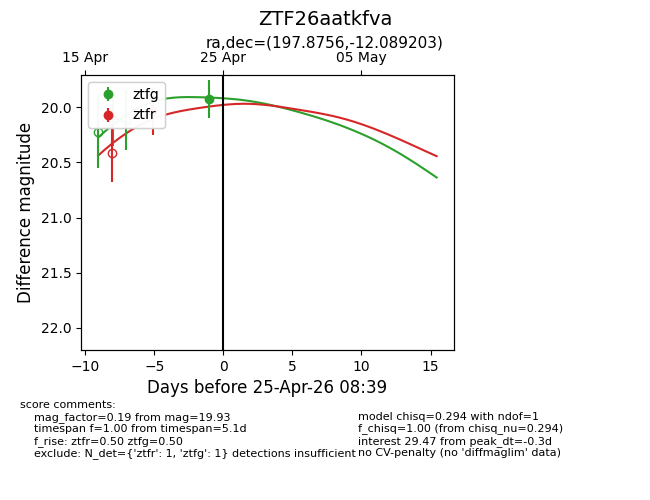
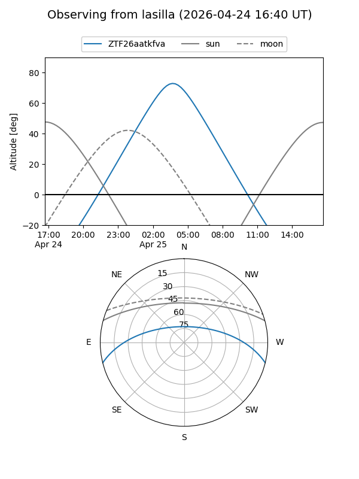
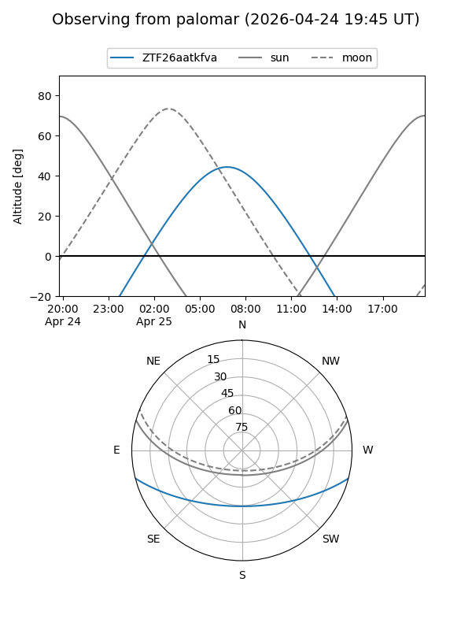
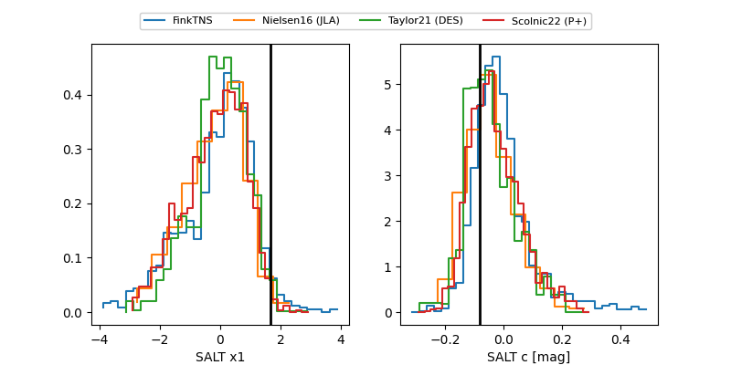

ZTF26aatkfva
Target ZTF26aatkfva at 2026-04-25 08:40
Aliases and brokers:
FINK: link
Lasair: link
ALeRCE: link
alt names
ZTF26aatkfva (ztf,fink_ztf)
Coordinates:
equatorial (ra, dec) = 197.8756,-12.08920
equatorial (HMS+DMS) = 13:11:30.14,-12:05:21.13
galactic (l, b) = (310.6535,+50.48148)
Flags:
Photometry:
last ztfg=19.93, ztfr=20.04
1 ztfg, 1 ztfr detections
Lightcurve

Visibility


Additional plots
